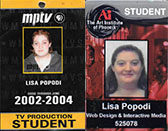
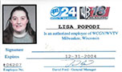

From early on in life I had an interest in TV, Photography, and Computer Programming. In high school I took many TV classes as well as Photography and a Visual Basic programming class. I knew right from there that I would go on to pursue my further education in the Television Production Industry. I went on to attend Milwaukee Area Technical College for my Associates in TV Production. In my second year, I was elected Studio Supervisor for our Student Ops Day where the Students run the show at PBS. I also received the honor of being awarded the Second Year Production Student of the Year Award in 2003. While attending school, I worked as Student Production staff on weekly produced shows and pledge drives.
I was hired on as lead Technical Director for the new 9:00 news on WVTV in Milwaukee. Working in a smaller station was great exposure to have the opportunity to do a number of different tasks. Not only did I do the job of Technical Director, but I also got to edit headlines and teases, as well as some video for voice over stories. I had the opportunity to build graphics for the newscast, as well as running Audio, Teleprompter, and Floor Directing at times also. My time at WVTV came to an end once we got word that the News would be going off the air.
Just prior to the end of the WVTV News, I was hired on by WISN to work in the Engineering Department. When first hired on my job was to run the robotic cameras for the newscasts consisting of running all cameras from a computer workstation. After a short time, I was asked to take over weekend overnight Master Control. Making sure EAS tests are being aired in compliance and commercials and programs are all lining as they should was the main task of the job. We also has to check tower lights to make sure we did not need to alert the FCC of any issues for planes not seeing our towers, and recording shows as they got fed down overnight to be aired for the next days. As sole person there, I often became responsible for the crew as well if anyone called out, I got to make calls to cover them or figure out how to shift assignments.
While working at WISN 12 and Walgreens as Head Photo Specialist, I decided to go back to school and pursue another degree in Visual Communications (Web Design and Development) at MATC. Through my classes there I was able to gain real world experience by doing my class work for real clients as more of an intern type of setting. This allowed me to take an old Microsoft Front Page website and built it using a database in asp.net for one of my classes. That site was live for a few years and I helped maintain it as well as doing some video work for the website and the talent agency to use for booking new shows, it has since been redesigned in a CMS as more of a in memory website as the band no longer exists at this time.
I was offered a position into a Tier 2 Hosting Support role at GoDaddy in Arizona. I picked up and moved to Arizona and transferred my Walgreens position to a store there. I am grateful for my time at GoDaddy, I learned so much from DNS to Email, Hosting Applications, Servers, and all kinds of online marketing tools offered by GoDaddy as well as the competition. Not only did I gain the knowledge for Web Development, but also the Business Management knowledge from an online presence perspective. I worked with so many intelligent individuals, and I am honored to have been able to learn everything I did from each and every one of them.
As much as I enjoyed working for GoDaddy I had a desire to dig deeper into website design and development. Along came an opportunity to do work for iFoundAgent, a Real Estate IDX and Website company. This was once again a life changing experience. Bringing my existing knowledge in, my initial help was in DNS as they were in the process of changing website hosts. Everything new is not without its challenges of learning more about the Real Estate industry itself, but I’m grateful for the things I was able to learn out of it. Dealing with the IDX and Geolocation, Google analytics more in details, WordPress Multisites, Google Apps, not to mention all the other CRM systems I had exposure to from that company alone. Another huge undertaking of mine was the process of merging the 7 different CRM systems down to about 3 in order to hopefully better manage clients full circle and make sure things did not fall through the cracks.
In addition to my “normal” jobs, I also did Website Maintenance and Graphic Design for Wedding Apparel Superstore in Phoenix, AZ as well as Premiere Weight Loss Center in Bradenton, FL. Wedding Apparel Superstore, formerly Wedding Accessory Superstore, exposed me to working in OsCommerce then OpenCart when the site was redesigned. I was also able to create a Trade show banner and multiple banner ads for the website in my time there. For Premiere Weight Loss Center, I redesigned the website, and am working with them on how to better utilize it to interact with clients and potential clients.
I was also approached to help out with a non-profit organization website. I have also been doing that for a number of years as well. We just launched the sister site for the adult group recently as well. In addition to the website itself, I also helped them setup Google apps for nonprofits as well as using an email marketing program to try and replace / supplement cost of the old school snail mail. We were able to hook up PayPal with the website to accept payment online, with the help of one of them creating a formula to make the payee responsible for the PayPal fees as well.